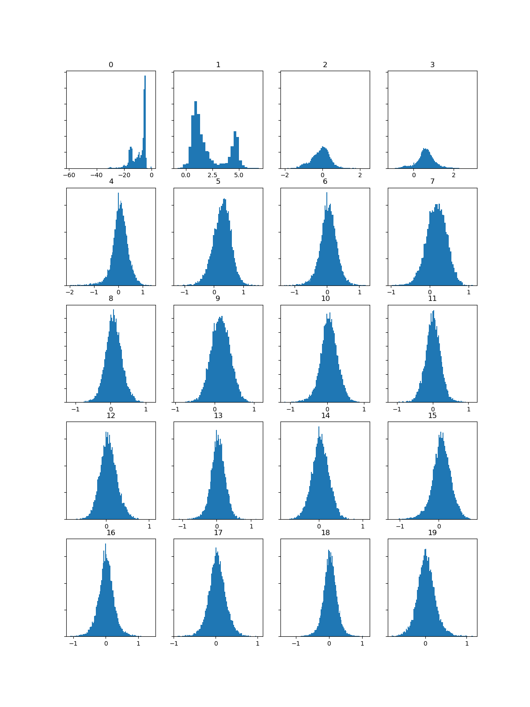
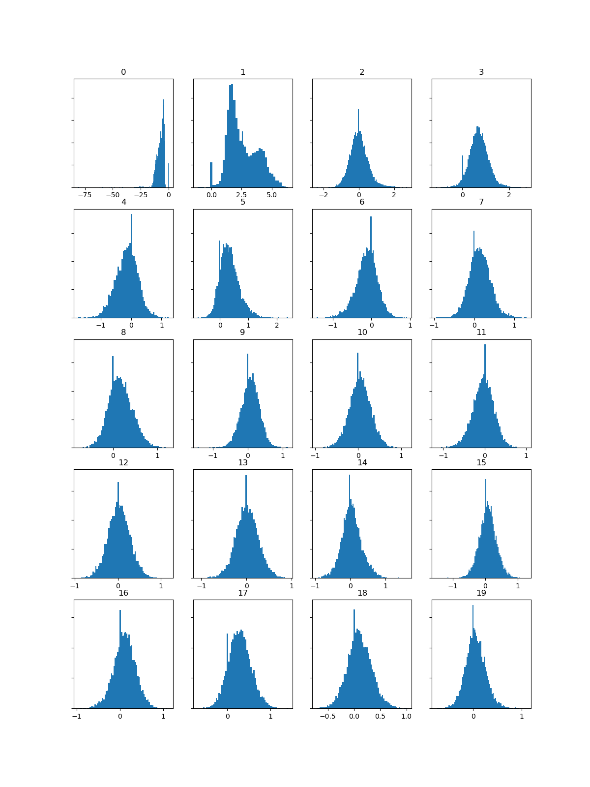

Week 9: Analysing and Extracting Meaning from Audio
Task 1: Similarity
To generate the similarity matrix, I am using the same three tracks used in the previous exercise.
In the similarity matrix, tracks 0-3 fall within the classical genre and tracks 4-6 fall within the rock genre. Tracks 7, 8 and 9 are all performed by The Killers, who use synths extensively in many of their songs.
Track 7 is When You Were Young, which is classified as alternative rock, post-punk revival, new wave and heartland rock, and could be considered a quintessential alternative rock song, with an ethereal synth atmosphere and a powerful bass line that do not overpower the guitar riffs. Track 8 is Human, classified as new wave, synth-pop and dance-rock. It is also the most danceable of the three tracks and, while it features a powerful bass line, the synth and electronic sequencing are predominant. Lastly, track 9, Shot At The Night is the biggest departure from The Killers' sound. It is classified as a synth-pop, pop rock song and it is very synth-heavy and more atmospherical than When You Were Young.
Despite their differences, the three Killers' tracks have many similarities in common and are as similar between each other as the classical or rock songs, or even more in the case of the tock songs. In particular, Human and Shot at the Night, the two songs with the most electronic arrangements appear to be more similar to each other than to When You Were Young.
Task 2: Compute and visualize features with histograms
When You Were Young
|  |  |
 |
| When You Were Young | Human | Shot at the Night |
Analysis
[Placeholder]